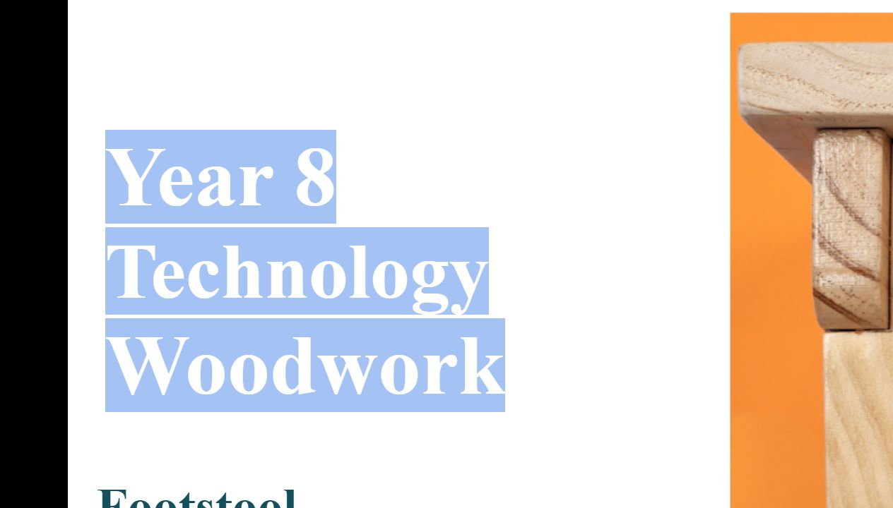

YEAR 8 · INTRO TIMBER TECHNOLOGY
Build understanding before you build the Footstool.
Use the original plan, guided learning checks and your evidence folio to develop a thoughtful, well-documented project.

COURSE MAP
Learning modules
Eight focused sections build the language, design thinking and drawing skills you need for the project. Each section includes a knowledge check and two evidence prompts.
Loading the learning sections…
PLANS AND DRAWINGS
Read the original Footstool plan
The plan is the project reference. Before practical work, use it to identify the title, views, dimension notation and information you need to ask about. Follow your teacher’s current instructions for the making work.


Authoritative Wagga High School Foot Stool working drawing — two pages. Use the written dimensions and teacher instruction; do not measure from the on-page preview.
Open larger (PDF, 2 pages)BUSY WORK
Practice that helps the project
Ten varied short activities are ready when you need extra practice, a catch-up task or a meaningful fast-finisher option.
Open Busy WorkYOUTUBE LEARNING
Watch with a purpose
Use these clips alongside the related course section. Make notes on the question or task set by your teacher.
EVIDENCE FOLIO
Show your learning
Complete the short evidence prompts after each section. Your responses are saved on this device and included when you print your folio.
TEACHER RESOURCES
Program, plans and local controls
This teacher-developed Year 8 elective Program uses the 2025 Industrial Technology Stage 4 Timber content as planning context. It is not Technology Mandatory or a NESA-approved program.
- Original Footstool plan — two-page PDF
- Teacher-developed 20-week Program and evidence schedule
- Local SOPs, risk controls, practical permissions, assessment settings and construction sequence remain school-controlled documents.